Taos Travel Guide
Town in the north-central region of New Mexico in the Sangre de Cristo Mountains, initially founded in 1615, it was intermittently occupied to act as fortified plaza and trading outpost for the neighboring Native American Taos Pueblo and Hispano communities
Places to See in Taos
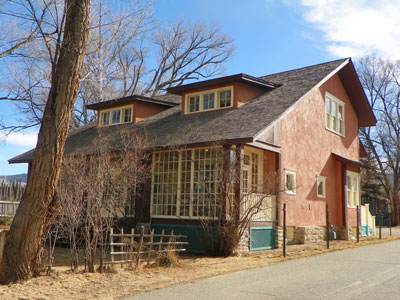
Lvklock, CC BY-SA 4.0, via Wikimedia Commons; Image Size Adjusted


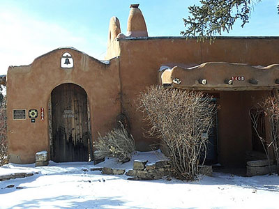
Jim Kimmons, Photo, CC BY-SA 2.0, via Wikimedia Commons; Image Size Adjusted

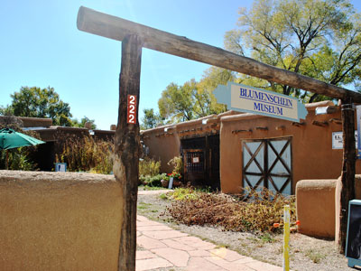
Elisa.rolle, CC BY-SA 3.0, via Wikimedia Commons; Image Size Adjusted

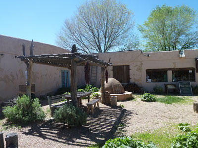
Maralynyanco, CC BY-SA 4.0, via Wikimedia Commons; Image Size Adjusted

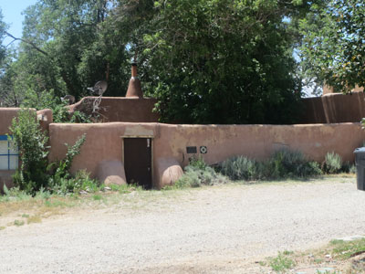
CaroleHenson, CC BY-SA 4.0, via Wikimedia Commons; Image Size Adjusted

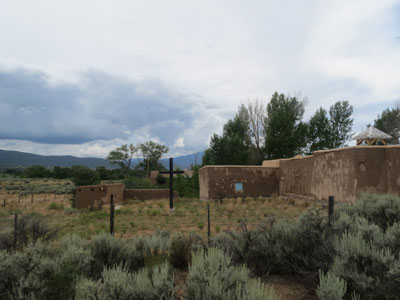
CaroleHenson, CC BY-SA 4.0, via Wikimedia Commons; Image Size Adjusted

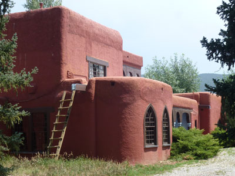
Archinia, CC BY-SA 3.0, via Wikimedia Commons; Image Size Adjusted

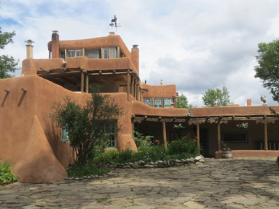
CaroleHenson, CC BY-SA 4.0, via Wikimedia Commons; Image Size Adjusted

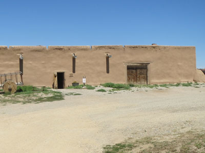
CaroleHenson, CC BY-SA 4.0, via Wikimedia Commons; Image Size Adjusted

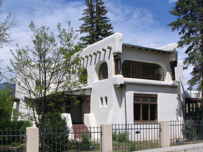
Bill Johnson - User: (WT-shared) Bill-on-the-Hill at wts wikivoyage, CC BY-SA 4.0, via Wikimedia Commons; Image Size Adjusted

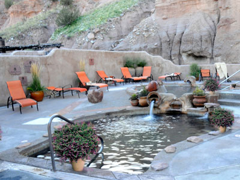
Ancho, Public domain, via Wikimedia Commons; Image Size Adjusted
.jpg){kind=link}
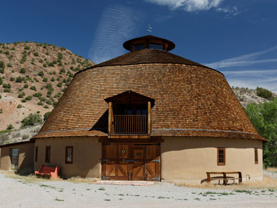
Gribeco, CC BY-SA 3.0, via Wikimedia Commons; Image Size Adjusted

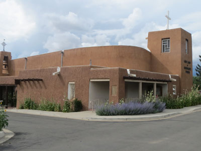
CaroleHenson, CC BY-SA 4.0, via Wikimedia Commons; Image Size Adjusted

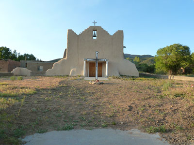
Chris English, CC BY-SA 3.0, via Wikimedia Commons; Image Size Adjusted

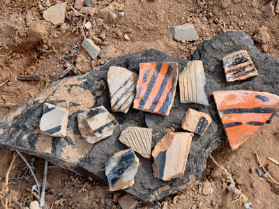
Larry Lamsa, CC BY 2.0, via Wikimedia Commons; Image Size Adjusted

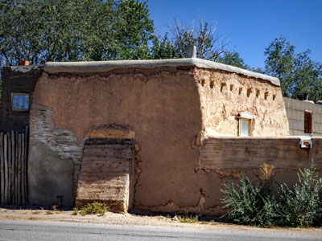
psyberartist, CC BY 2.0, via Wikimedia Commons; Image Size Adjusted
.jpg){kind=link}
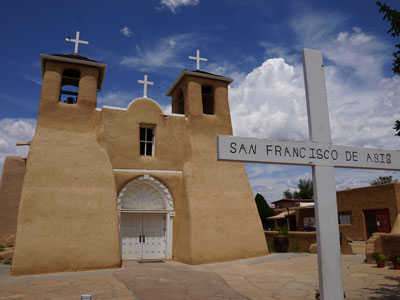
Venprof, CC BY-SA 4.0, via Wikimedia Commons; Image Size Adjusted

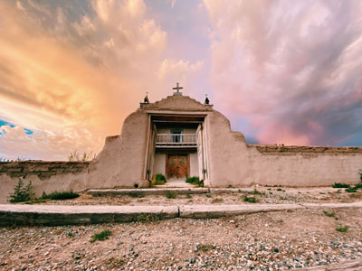
Jon Vigil, CC BY-SA 4.0, via Wikimedia Commons; Image Size Adjusted

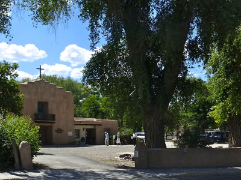
MPSharwood, CC BY-SA 4.0, via Wikimedia Commons; Image Size Adjusted

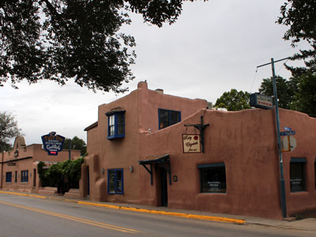
MARELBU, CC BY 3.0, via Wikimedia Commons; Image Size Adjusted
.jpg){kind=link}
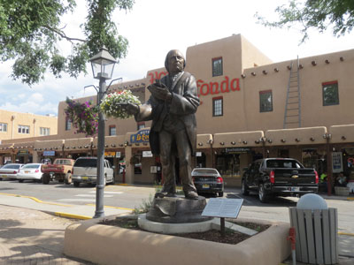
CaroleHenson, CC BY-SA 4.0, via Wikimedia Commons; Image Size Adjusted


Cpw2017, CC BY-SA 4.0, via Wikimedia Commons; Image Size Adjusted

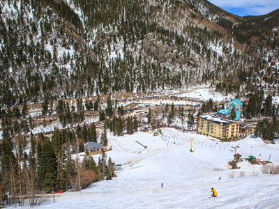
Murray Foubister, CC BY-SA 2.0, via Wikimedia Commons; Image Size Adjusted
.jpg){kind=link}
Overview
Taos is a small mountain town in north-central New Mexico, set at about 6,970 feet in a high valley between the Sangre de Cristo Mountains and the Rio Grande Gorge. It is famous for Taos Pueblo, a UNESCO World Heritage Site that has been continuously inhabited for roughly a thousand years, for its century-old art colony, and for its skiing, hiking, and rafting. The name Taos comes from the Tiwa language and is usually translated as "place of the red willows."
People come to Taos for its blend of Native American, Hispanic, and Anglo traditions, the adobe churches and galleries around Taos Plaza, and some of the best mountain scenery in the Southwest. Artists, writers, and outdoor enthusiasts have been drawn here for generations, and the town remains a quiet alternative to larger destinations, with a distinctive creative spirit and a strong sense of place.
Taos Pueblo, just north of town, has been occupied since about 1000 CE. Spanish colonists established the settlement of Don Fernando de Taos around 1615, and Taos Pueblo played a leading role in the Pueblo Revolt of 1680. Comanche raids and trade fairs shaped the region in the 1700s, and Taos became a hub for mountain men and fur traders, including Kit Carson, who made his home here. In 1899 artists began settling in Taos, and six of them formed the Taos Society of Artists in 1915, followed by writers and patrons such as Mabel Dodge Luhan and D. H. Lawrence.
The centerpiece of any visit is Taos Pueblo, with its multistory adobe buildings set against Taos Mountain. The Rio Grande Gorge Bridge, one of the highest suspension bridges in the country, spans a canyon about 650 feet deep west of town. The San Francisco de Asís Mission Church in Ranchos de Taos, famously painted by Georgia O’Keeffe and photographed by Ansel Adams, is among the most photographed churches in America, and Taos Ski Valley and Wheeler Peak, the highest point in New Mexico at 13,161 feet, anchor the mountains to the north.
Taos has an outsized museum and arts scene for a town of its size. The Harwood Museum of Art, the Taos Art Museum at Fechin House, and the Millicent Rogers Museum showcase regional art and Native American and Hispanic craft. Historic homes, including the Ernest L. Blumenschein House, the Kit Carson House, the Martinez Hacienda, the Mabel Dodge Luhan House, and the D. H. Lawrence Ranch, preserve the stories of the town’s creative and frontier past.
The surrounding landscape is the main park. Rio Grande del Norte National Monument and the Orilla Verde Recreation Area offer whitewater rafting, fishing, and camping along the river, while the Carson National Forest and Wheeler Peak Wilderness provide trails through alpine meadows and aspen forests. In the center of town, Kit Carson Memorial Park and the plaza offer green space and a gathering place for festivals and markets.
Taos has a cool, sunny high desert climate with four distinct seasons. Summers are mild, with highs in the 80s °F and cool nights, along with afternoon thunderstorms in July and August. Autumn brings golden aspens and clear days, winters are cold and snowy, particularly in the mountains where skiing runs from late November into spring, and spring is cool and often windy.
This article uses material from the Wikipedia articles Taos, New Mexico, Taos Pueblo, Taos Society of Artists, which are released under the Creative Commons Attribution-Share-Alike License 3.0.